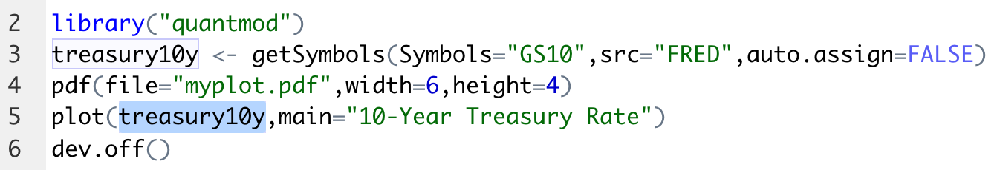

2 Software Installation
For data analysis, RStudio will serve as your environment for writing code and text. However, as an Integrated Development Environment (IDE), RStudio is not a standalone program; it depends on R, R Markdown, and a LaTeX processor installed on your system. RStudio interacts with these programs in the background to generate an output. Below, you will find the installation instructions for each of these programs. Additionally, a set of 18 steps is provided to help you verify whether R, RStudio, R Markdown, and LaTeX have been installed correctly.
2.1 Install R
To install R on your computer, follow the instructions below:
For MacOS:
- To download
Rfor MacOS, visit the R project website: www.r-project.org. - Click CRAN mirror and choose your preferred mirror. It doesn’t really matter which mirror you choose, simply choose a location close to you, e.g. National Institute for Computational Sciences, Oak Ridge, TN.
- Select Download R for macOS.
- Under “Latest release”, read the first paragraph to check whether the program is compatible with your operating system (OS) and processor. To find your computer’s OS and processor, click the top left Apple icon, and click “About this Mac.” Under “macOS”, you will see both the name (e.g. “Ventura”, “Catalina”, “Monterey”) and the number (e.g. “Version 13.4.1”) of the OS, and under “Processor” you will either see that your computer is run by an Intel processor or an Apple silicon (M1/M2) processor.
- If the operating system (OS) and the processor are compatible, click on the first
R-X.X.X.pkg(whereXrepresents the R version numbers). Otherwise, if you have an older OS or an Intel processor, click on a version further down that is compatible with your system. - Once the file has downloaded, click it to proceed to installation, leaving all default settings as they are.
For Windows:
- To download
Rfor Windows, visit the R project website: www.r-project.org. - Click CRAN mirror and choose your preferred mirror. It doesn’t really matter which mirror you choose, simply choose a location close to you, e.g. Revolution Analytics, Dallas, TX.
- Select Download R for Windows.
- Select “base”, and read whether the program is compatible with your Windows version.
- If it is compatible, click Download
R-X.X.Xfor Windows (Xare numbers), and otherwise click here for older versions. - Once the file has downloaded, click it to proceed to installation, leaving all default settings as they are.
2.2 Install RStudio
- Visit the
RStudiowebsite: www.rstudio.com and navigate to the download page. - Click DOWNLOAD.
- Scroll down to “All Installers” section.
- Choose the download that matches your computer. If you have a Mac, it’s most likely “macOS 10.15+”; then click the download link (e.g. “RStudio-2022.07.1-554.dmg”). If you have a Windows, it’s most likely “Windows 10/11” and click the download link (e.g. “RStudio-2022.07.1-554.exe”).
- Open the file when it has downloaded, and install with the default settings.
2.3 Install R Markdown
R Markdown can be installed from inside the RStudio IDE.
- To download
R Markdown, openRStudio, after you have successfully installedRandRStudio. - In RStudio, find the “Console” window.
- Type the command
install.packages("rmarkdown")in the console and press Enter.
2.4 Install LaTeX
When it comes to installing LaTeX, there are several software options available. While most options work well, I recommend using TinyTeX. TinyTeX as it is an easy-to-maintain LaTeX distribution. Other good alternatives include MacTeX and MiKTeX. LaTeX is the underlying program responsible for word processing and generating PDF reports within RStudio.
To install TinyTeX using RStudio, follow these steps:
- Open
RStudioafter successfully installingR,RStudio, andR Markdown. - Locate the “Console” window within RStudio.
- Type
install.packages("tinytex")and press Enter. - Type
tinytex::install_tinytex()and press Enter. - Type
install.packages("knitr")and press Enter.
2.5 Install R Packages
R provides a set of basic functions that can be extended using packages. To install a package (e.g., quantmod), follow these steps:
- Open RStudio.
- In the RStudio window, find the “Console” window.
- Type the command
install.packages("quantmod")in the console and press Enter. - Wait for the installation process to complete. R will download and install the package from the appropriate repository.
After installation, you can use the package in your script by including the line library("quantmod") at the beginning. Remember to execute the library("quantmod") command each time you want to use functions from the quantmod package in your code.
It is common practice to load the necessary packages at the beginning of your script, even if you don’t use all of them immediately. This ensures that all the required functions and tools are available when needed and promotes a consistent and organized approach to package management in your code.
As a side note, the quantmod package includes the getSymbols function, which is commonly used to download financial data, such as the S&P 500 index (GSPC):
## [1] "GSPC"## GSPC.Open GSPC.High GSPC.Low GSPC.Close GSPC.Volume
## 2007-01-03 1418.03 1429.42 1407.86 1416.60 3429160000
## 2007-01-04 1416.60 1421.84 1408.43 1418.34 3004460000
## 2007-01-05 1418.34 1418.34 1405.75 1409.71 2919400000
## 2007-01-08 1409.26 1414.98 1403.97 1412.84 2763340000
## 2007-01-09 1412.84 1415.61 1405.42 1412.11 3038380000
## 2007-01-10 1408.70 1415.99 1405.32 1414.85 2764660000
## GSPC.Adjusted
## 2007-01-03 1416.60
## 2007-01-04 1418.34
## 2007-01-05 1409.71
## 2007-01-08 1412.84
## 2007-01-09 1412.11
## 2007-01-10 1414.85Here, the getSymbols function retrieves the historical data for the S&P 500 index from Yahoo Finance, and stores it in the GSPC object. The head function then displays the first few rows of the downloaded data.
R packages provide a wealth of specialized functions for specific tasks. To use a function from a particular package, you can indicate the package by preceding the function with the package name followed by a double colon ::. For example, quantmod::getSymbols() specifies the getSymbols() function from the quantmod package. This practice helps to avoid conflicts when multiple packages provide functions with the same name. It also allows users to easily identify the package associated with the function, promoting clarity and reproducibility in code.
2.6 18-Step Test
To ensure that R, RStudio, R Markdown, and LaTeX are installed properly, you can follow the 18-step test provided below. This test will help verify the functionality of the installed programs and identify any potential issues or errors.
During this process, you may encounter the following issues:
Issue with Generating PDF: If you are unable to generate a PDF file in step 15, it is likely due to an issue with the installation of LaTeX. In such cases, please revisit the instructions for installing LaTeX in Chapter 2.4 and ensure you have followed them correctly. Alternatively, you can consider installing MacTeX or MiKTeX instead of TinyTeX.
Non-Latin Alphabet Language: If your computer language is not based on the Latin alphabet (e.g., Chinese, Arabic, Farsi, Russian, etc.), additional instructions may be required. You can refer to this video for specific guidance: youtu.be/pX_fy2fyM30.
I encourage you to persist and do your best to install all the required software, even if it takes some time. Downloading and installing programs is a critical skill that is essential in almost every profession today. This is an excellent opportunity to acquire this skill.
Keep going and don’t hesitate to seek additional support or resources if needed. It’s common to encounter challenges when installing software, and resources like google.com and stackoverflow.com can provide helpful answers and suggestions. If you encounter an error, simply copy and paste the error message into a search engine, and you’ll likely find solutions and guidance from the community.
If you fail to install R, RStudio, and LaTeX, I recommend using RStudio Cloud, an online platform where you can perform all the necessary tasks directly in your web browser. You can access RStudio Cloud at rstudio.cloud. While signing up is free, please note that some features may require a fee.
Make a Plot
To continue with the test, make sure you have R, RStudio, R Markdown, and LaTeX installed and are connected to the internet. Follow the steps below in RStudio:
- Type and execute
install.packages("quantmod")in the RStudio console. - Click on the top-left plus sign
 then click
then click R Script. - Click
File-Save As...then choose a familiar folder. - Copy and paste the following R code into your R Script:
library("quantmod")
treasury10y <- getSymbols(Symbols = "GS10", src = "FRED", auto.assign = FALSE)
plot(treasury10y, main = "10-Year Treasury Rate")
Figure 2.1: R Plot
- Click on
Source: (or use the shortcut Ctrl+Shift+Enter or Cmd+Shift+Return).
(or use the shortcut Ctrl+Shift+Enter or Cmd+Shift+Return).
You should now see a plot of the 10-year Treasury rate on your screen. Compare it to the rate displayed on fred.stlouisfed.org/series/GS10.
Save Plot as PDF
Continue with the following steps in RStudio:
- Add the line:
pdf(file="myplot.pdf",width=6,height=4)before the plot function, and adddev.off()after the plot:
library("quantmod")
treasury10y <- getSymbols(Symbols = "GS10", src = "FRED", auto.assign = FALSE)
pdf(file = "myplot.pdf", width = 6, height = 4)
plot(treasury10y, main = "10-Year Treasury Rate")
dev.off()- Click on
Source: (or use the shortcut Ctrl+Shift+Enter or Cmd+Shift+Return). - Now navigate to the same folder on your computer where you saved the R script.
- There should be a file called
myplot.pdf- open it.
You should now see the PDF version of the plot displaying the Treasury rate. If you encounter no error message but cannot locate the myplot.pdf file, it’s possible that R saved it in a different folder than where the R script is located. To check where R saves the plot, type getwd() in the console, which stands for “get working directory.” If you want to change the working directory and have R save the files in a different folder, type setwd("/Users/.../..."), replacing "/Users/.../..." with the path to the desired folder.
Run Marked Code
To run only one line or one variable, mark it and then click Run:  (or use the shortcut Ctrl+Enter or Cmd+Return). Follow these steps in RStudio:
(or use the shortcut Ctrl+Enter or Cmd+Return). Follow these steps in RStudio:
- Mark the variable
treasury10y:

- Click
Run: (or use shortcut Ctrl+Enter or Cmd+Return)
(or use shortcut Ctrl+Enter or Cmd+Return)
You should see the data displayed in your console, ending with 2023-06-01 3.75.
Create PDF with R Markdown
Next, let’s ensure that R Markdown is working. If you have installed LaTeX and knitr, follow these steps in RStudio:
- Click on the top-left plus sign then click
R Markdown... - A dialog box will appear - select
Documentand choosePDF, then clickOK:
Figure 2.2: New R Markdown
You should now see a file with text and code.
- Click
File-Save As...and choose a familiar folder to save the file. - Click
Knit: (or use the shortcut Ctrl+Shift+K or Cmd+Shift+K).
(or use the shortcut Ctrl+Shift+K or Cmd+Shift+K).
A PDF file should appear on your screen and also in your chosen folder.
- Next, locate the following lines:
- Replace these lines with the following (do not copy the line numbers):
16 ```{r, message=FALSE,warning=FALSE,echo=FALSE}
17 library("quantmod")
18 treasury10y <- getSymbols(Symbols="GS10",src="FRED",auto.assign=FALSE)
19 plot(treasury10y,main="10-Year Treasury Rate")
20 ```- Click
Knit: (or use the shortcut Ctrl+Shift+K or Cmd+Shift+K).
You should now see a file that looks similar to this:
Figure 2.3: PDF File Produced with R Markdown
Hint: You can set echo=TRUE to include R code in your report.
You can now change the title of the file and the text to create a professional report. If you click the arrow next to Knit:  you have options to export your file as an HTML or Word document instead of a PDF document, which is convenient when designing a website or writing an app:
you have options to export your file as an HTML or Word document instead of a PDF document, which is convenient when designing a website or writing an app: